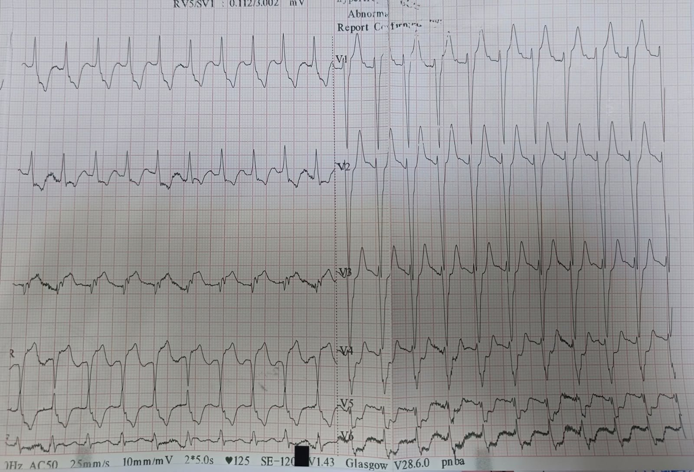
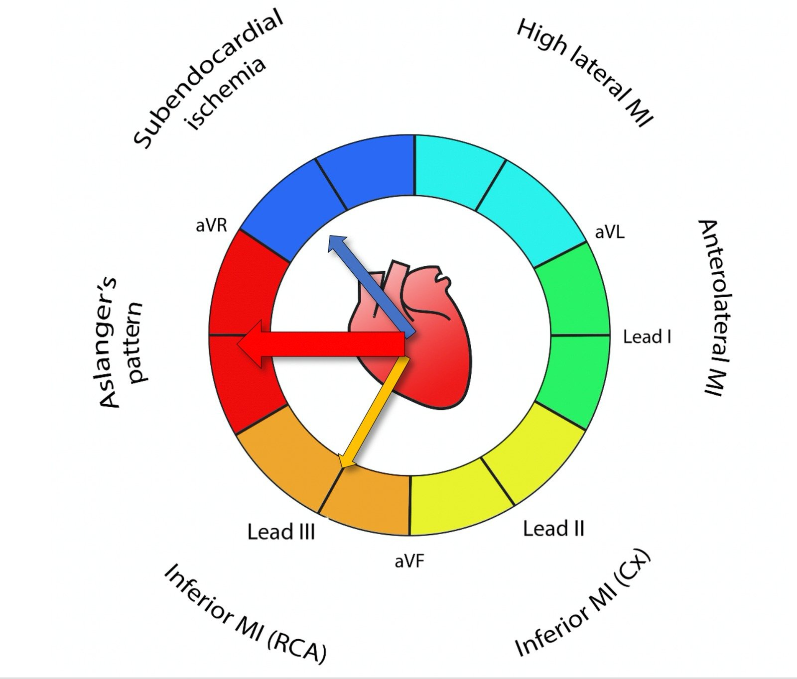
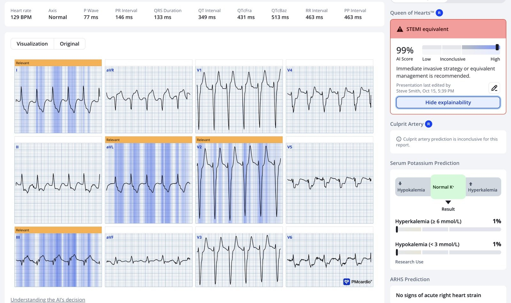
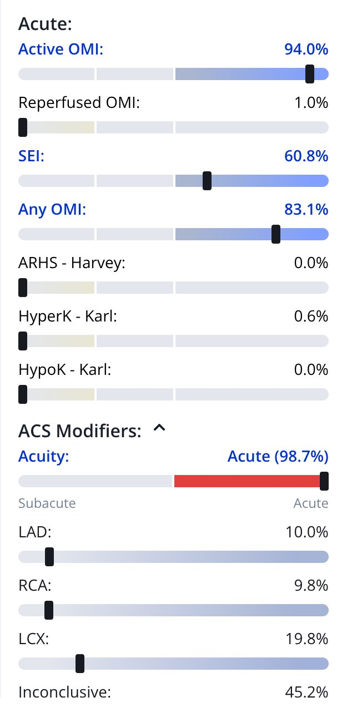
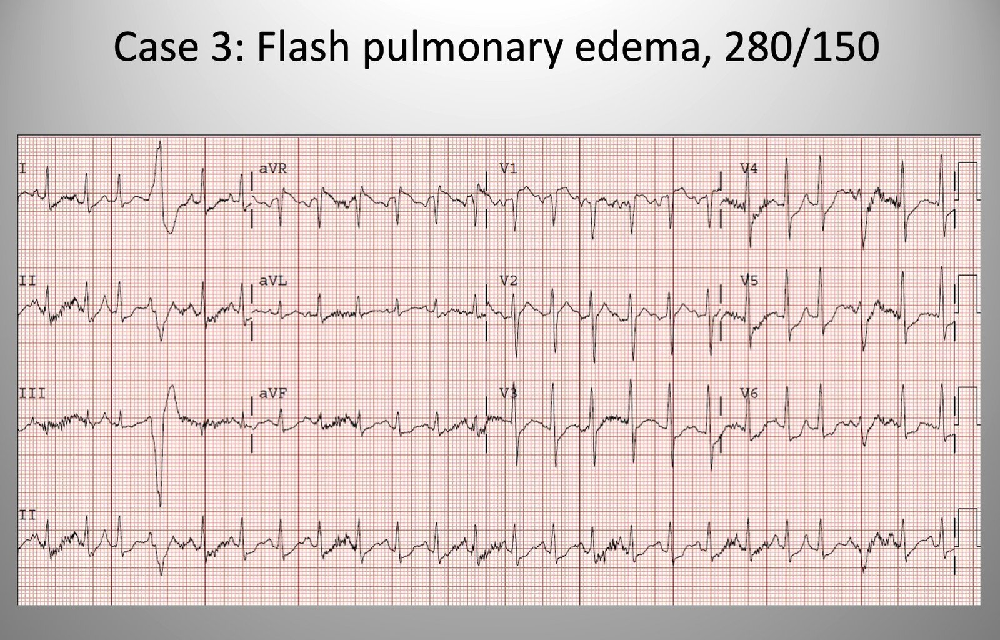
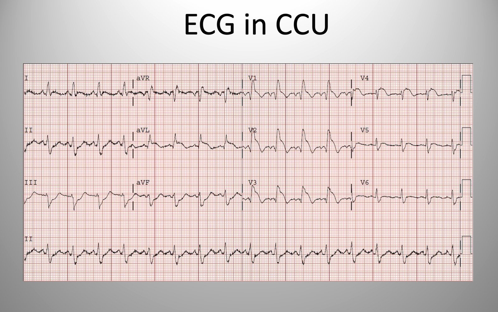
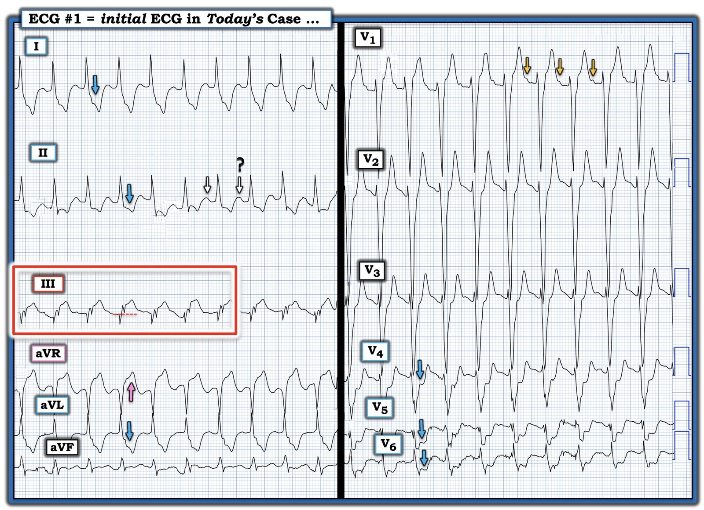

20/10/2026 — Phù phổi cấp. Vì sao?
Bản dịch tiếng Việt của bài "Acute pulmonary edema. Why?" – Dr. Smith’s ECG Blog. Giữ nguyên toàn bộ 7 hình ảnh của bản gốc.
Đây là ca thứ 3 do Dr. Ahmed Marai viết, người vừa tốt nghiệp Trường Y ở Iraq.
Một bệnh nhân nam 65 tuổi đến khoa cấp cứu (ED) lúc 5:50 sáng vì khó thở, khởi phát 2 ngày trước đó và nặng lên 1 giờ trước khi đến viện. Ông không đau ngực, không nôn. Tiền sử bệnh đáng chú ý gồm tăng huyết áp, bệnh tim thiếu máu cục bộ, suy tim và bệnh thận giai đoạn cuối (đang lọc máu 4 buổi mỗi tuần). Ông đã được phẫu thuật bắc cầu chủ vành (CABG) một năm trước đó.
Tại khoa cấp cứu, bệnh nhân tỉnh, định hướng tốt nhưng thở nhanh. Huyết áp 190/70 mmHg, mạch khoảng 130 lần/phút (bpm), SpO₂ 88%. Nghe phổi có ran nổ hai đáy, và có phù hai chi dưới. Rõ ràng bệnh nhân đang bị phù phổi kèm giảm oxy máu.
Một điện tâm đồ được ghi tại khoa cấp cứu:


— Bạn nghĩ gì? —
= = =
Smith: Có nhịp nhanh xoang với QRS rộng (133 ms), giống LBBB nhưng tôi sẽ gọi đó là chậm dẫn truyền trong thất không đặc hiệu. Có ST chênh xuống (STD) ở I, II, aVL, rồi ở V2 và tăng dần cho tới tận V6. Như vậy có một vectơ ST chênh xuống hướng về chuyển đạo II và V5, kèm ST chênh lên (STE) soi gương ở aVR. Nhưng CŨNG có ST chênh lên ở chuyển đạo III.
Như vậy, đây là hình ảnh Aslanger (Aslanger’s pattern), trong đó có CẢ HAI: — 1) thiếu máu cục bộ dưới nội tâm mạc lan tỏa, tạo ra một vectơ ST chênh xuống hướng về chuyển đạo II và V5 (về phía mỏm tim); — VÀ — 2) tắc hoàn toàn động mạch cấp máu cho thành dưới, với một vectơ ST chênh lên hướng về chuyển đạo III. Sự kết hợp của 2 vectơ này làm triệt tiêu ST chênh lên của nhồi máu thành dưới ở các chuyển đạo aVF và II, nhưng không triệt tiêu ở chuyển đạo III.
Kết quả là một hình ảnh OMI với ST chênh lên chỉ ở một chuyển đạo — đi kèm một bệnh nhân rất nặng do có thêm thiếu máu cục bộ lan rộng, thường do hẹp nặng ở các mạch khác, nhất là LAD hoặc thân chung động mạch vành trái.
Nếu CHỈ có thiếu máu cục bộ dưới nội tâm mạc, người ta có thể quy nó cho tình trạng giảm oxy máu và nhịp nhanh (mất cân bằng cung-cầu). Hoàn toàn có thể, thậm chí nhiều khả năng, bệnh nhân có tiền sử suy thận và suy tim này chỉ đơn giản đang bị suy tim mất bù, có lẽ do huyết áp tăng cao khởi phát.
Tuy nhiên, phải luôn nhớ rằng phù phổi cấp thường do hội chứng vành cấp (ACS) khởi phát — ngay cả khi nó có vẻ được khởi phát bởi một yếu tố khác, chẳng hạn tăng huyết áp. Ngay cả khi huyết áp rất cao, đó có thể là hậu quả của thiếu máu cục bộ.
Và, quả nhiên, trong ca này ST chênh lên ở chuyển đạo III cho bạn biết rằng còn có tắc cấp (OMI).
Bệnh nhân này cần được đưa vào phòng thông tim cấp cứu!


= = =
Mô hình AI điện tâm đồ PMcardio Queen of Hearts, nay đã được FDA phê duyệt, nghĩ gì?


= = =
Mô hình thử nghiệm của chúng tôi đưa ra chẩn đoán thiếu máu cục bộ dưới nội tâm mạc (SEI). Đây là chi tiết đánh giá của QOH (Queen-Of-Hearts):


Như vậy, QOH chẩn đoán CẢ SEI lẫn OMI — mô tả chính xác định nghĩa của hình ảnh Aslanger.
= = =
Ca bệnh tiếp diễn:
Các bác sĩ khoa cấp cứu đọc điện tâm đồ là nhịp nhanh xoang kèm blốc nhánh trái (LBBB) và thay đổi đoạn ST không đặc hiệu. Đây là điện tâm đồ duy nhất được ghi.
Phòng thông tim không được kích hoạt.
Bệnh nhân được cho thở oxy qua mặt nạ và đặt ống thông tiểu Foley. Bệnh nhân được tiêm hai ống furosemid (mỗi ống 20 mg). 15 phút sau, bệnh nhân được tiêm thêm hai ống. Tuy nhiên, vẫn không có nước tiểu và triệu chứng không cải thiện. Lúc này đã có kết quả xét nghiệm, đáng chú ý là creatinin 10 mg/dL và BUN 123 mg/dL (suy thận).
Troponin I tim lần đầu tăng, ở mức 0.334 ng/mL (khoảng tham chiếu của phòng xét nghiệm: 0–0.03 ng/mL). Dựa vào kết quả này, bệnh nhân được dùng nitrat ngậm dưới lưỡi, aspirin, clopidogrel và truyền heparin.
Vì vẫn không có nước tiểu, bệnh nhân được tiêm thêm 4 ống furosemid, rồi thêm 4 ống nữa sau đó 30 phút. Dù vậy, vẫn không có nước tiểu.
Sau đó SpO₂ của bệnh nhân tụt xuống 70% dù đã dùng mặt nạ không thở lại (non-rebreather), và bệnh nhân trở nên mất định hướng. Các ê-kíp nội khoa và gây mê hồi sức được mời hội chẩn. Họ đề nghị thở áp lực dương liên tục (CPAP). Sau khoảng 20 phút thở CPAP, triệu chứng và SpO₂ của bệnh nhân không cải thiện.
Tóm lại — tình trạng bệnh nhân xấu đi nhanh chóng, phải đặt nội khí quản. Bệnh nhân ngừng tim ngay sau khi đặt nội khí quản — và không thể hồi sức thành công.
Chẩn đoán cuối cùng của các bác sĩ khoa cấp cứu cho ca này là “Đợt cấp của suy tim, ngừng tim xảy ra sau đặt nội khí quản”.
OMI không bao giờ được nhận ra — trừ bởi một sinh viên y vừa mới tốt nghiệp.
= = =
Những điểm cần học:
- Hãy dùng Queen of Hearts, vì điện tâm đồ đơn giản là quá khó đối với hầu hết con người.
- Hãy học các hình ảnh OMI, bao gồm hình ảnh Aslanger.
- NSTEMI là một chẩn đoán vô giá trị.
- Trình độ đào tạo của người hành nghề ít liên quan tới kỹ năng nhận ra OMI trên điện tâm đồ. Một số người đọc giỏi nhất là nhân viên cấp cứu ngoài viện, kỹ thuật viên điện tâm đồ và sinh viên y. Kỹ năng này đòi hỏi sự quan tâm chủ động, rất nhiều công sức và một mức độ kỹ năng thị giác nhất định (một phần trong đó có thể là bẩm sinh — nhưng không đòi hỏi phải hoàn tất đào tạo ở bất kỳ chuyên khoa nào).
- Phù phổi cấp kịch phát (flash pulmonary edema) kèm tăng huyết áp có thể được khởi phát bởi một đợt huyết áp tăng vọt — hoặc có thể được khởi phát bởi ACS, gây tăng catecholamin lưu hành, rồi huyết áp cao và một vòng xoắn bệnh lý tiếp theo. Đây là một ca phù phổi cấp kèm huyết áp rất cao:


= = =
Điện tâm đồ cho thấy nhịp nhanh xoang với ST chênh xuống lan rộng và ST chênh lên ở aVR ==> chẩn đoán thiếu máu cục bộ dưới nội tâm mạc. Có lẽ do mất cân bằng cung-cầu vì tăng huyết áp nặng, đúng không?
- Bệnh nhân được điều trị bằng thở áp lực dương hai mức (BiPAP) và nitroglycerin tĩnh mạch liều cao. Ban đầu bệnh nhân có vẻ khá hơn RẤT NHIỀU. Bệnh nhân được nhập đơn vị hồi sức tích cực (ICU) — nơi một điện tâm đồ khác được ghi:


= = =
= = =
==================================
BÌNH LUẬN CỦA TÔI, bởi KEN GRAUER, MD (20/10/2026):
Trong số những thực thể thường bị hiểu sai khi đọc điện tâm đồ lâm sàng ở bệnh nhân cấp cứu — có khái niệm DSI (thiếu máu cục bộ dưới nội tâm mạc lan tỏa — Diffuse Subendocardial Ischemia). Như đã được nhấn mạnh nhiều lần trên Dr. Smith’s ECG Blog (Xem Bình luận của tôi trong bài ngày 30 tháng Mười Hai năm 2025 và bài ngày 1 tháng Ba năm 2023, cùng nhiều bài khác) — DSI là một hình ảnh điện tâm đồ cần ngay lập tức gợi đến các cân nhắc chẩn đoán sau:
- Bệnh mạch vành nặng (do thân chung động mạch vành trái, LAD đoạn gần, và/hoặc bệnh 2 hoặc 3 nhánh mạch vành nặng) — mà trong bối cảnh lâm sàng phù hợp có thể chỉ ra ACS (hội chứng vành cấp — Acute Coronary Syndrome).
- Thiếu máu cục bộ dưới nội tâm mạc do một nguyên nhân khác (tức là, nhịp nhanh kéo dài — nhịp nhanh xoang, hoặc một rối loạn nhịp nhanh khác; sốc/tụt huyết áp nặng; xuất huyết tiêu hóa; thiếu máu; rối loạn điện giải, v.v.).
= = =
Vì sao DSI vẫn thường bị hiểu sai …
DSI được chẩn đoán trên điện tâm đồ khi có ST chênh xuống ở nhiều chuyển đạo — đi kèm ST chênh lên ở chuyển đạo aVR. Những lý do khiến thực thể này vẫn thường bị hiểu sai bao gồm:
- Nhiều người hành nghề mặc định rằng thấy DSI trên điện tâm đồ là tự động chỉ ra bệnh mạch vành nặng — qua đó bỏ qua các nguyên nhân tiềm năng khác của thực thể này (tức là, nhịp nhanh kéo dài — nhịp nhanh xoang, hoặc một rối loạn nhịp nhanh khác; sốc/tụt huyết áp nặng; xuất huyết tiêu hóa; thiếu máu; rối loạn điện giải, v.v.).
- Nhiều người hành nghề cũng lầm tưởng rằng thấy DSI trên điện tâm đồ ở một bệnh nhân đau ngực (CP — Chest Pain) hoặc có triệu chứng cấp tính khác gợi ý ACS (hội chứng vành cấp) — là tự động chỉ ra nhồi máu do tắc mạch vành (tức là, một OMI ). Dù có thể nguyên nhân của DSI là tắc mạch vành cấp — dấu hiệu điện tâm đồ ST chênh xuống lan tỏa (thường ở 6 chuyển đạo trở lên) đi kèm ST chênh lên ở chuyển đạo aVR thường không phải là hậu quả của tắc mạch vành cấp.
- Nhiều người hành nghề vẫn chưa quen với hình ảnh Aslanger — trong đó có cả DSI lẫn OMI thành dưới cấp. Như được minh họa trong ca hôm nay — DSI cộng OMI thành dưới được chẩn đoán khi có ST chênh xuống lan tỏa kèm ST chênh lên ở cả chuyển đạo aVR và chuyển đạo III, ngay cả khi không có ST chênh lên ở 2 chuyển đạo thành dưới còn lại.
- Nhiều người hành nghề vẫn chưa quen với các “dấu hoa thị” chẩn đoán MẤU CHỐT khác của DSI — đó là: i) Phân biệt giữa DSI với OMI thành sau cấp (trong đó mức ST chênh xuống rõ ràng lớn nhất ở các chuyển đạo V2 và/hoặc V3 và/hoặc V4); —ii) Sự hiện diện của LVH có thể gây nhầm lẫn khi cố phân biệt giữa DSI với các hình ảnh “tăng gánh” thất trái; — iii) Quên cân nhắc bệnh nhiều nhánh mạch vành ở bệnh nhân đau ngực có ST chênh xuống ở nhiều chuyển đạo hơn bạn dự kiến; — và, iv) Giữa các lý do tiềm năng khác gây bất thường sóng ST-T — tăng kali máu có thể dễ dàng bị bỏ sót …
- LƯU Ý: Nhồi máu cấp thường không đi kèm nhịp nhanh xoang trừ khi “một điều gì khác” cũng đang diễn ra (tức là, suy tim, sốc, bệnh phổi, suy đa cơ quan, v.v.). Nếu bệnh nhân mà bạn nghi ACS có nhịp nhanh xoang ==> Chúng ta cần tìm ra VÌ SAO …
= = =
Một lần nữa xem lại điện tâm đồ hôm nay …
Bệnh nhân trong ca hôm nay là một nam giới 65 tuổi có tiền sử tăng huyết áp, bệnh mạch vành, suy tim và bệnh thận giai đoạn cuối, đang lọc máu dài hạn. Lý do chính đến khám là khó thở tăng dần (nhưng không đau ngực). Tôi đã tái hiện điện tâm đồ của bệnh nhân này trong Hình 1. Rất đáng để XEM LẠI một lần nữa bản ghi hôm nay trong khi cân nhắc những điều nêu trên:
- Nhịp trong Hình 1 là một SVT đều ( = QRS rộng, nhưng “trông” có nguồn gốc trên thất). Việc nhịp này là nhịp nhanh xoang ban đầu không hiển nhiên — vì như các mũi tên TRẮNG cho thấy, rất khó (không thể) xác định từ chuyển đạo II liệu các sóng lệch dương tròn thấy sau đoạn ST chênh xuống ở chuyển đạo này là sóng T dương? — sóng P xoang? — hay cả sóng T dương lẫn sóng P xoang bên dưới bị sóng T dương che khuất?
- May mắn là — thấy rõ một sóng P xoang ở chuyển đạo V1, xác nhận nhịp nhanh xoang. Tuy nhiên, tần số của nhịp nhanh xoang này nhanh! ( ~125-130/phút) ==> Chúng ta cần tìm ra nguyên nhân của nhịp nhanh xoang nhanh như vậy!
- Có LVH rõ ràng (sóng S ≥25-30 mm ở các chuyển đạo V1,V2,V3). Có lẽ LVH này là nguyên nhân (hoặc ít nhất góp phần) gây ra các sóng T dương, cao ở các chuyển đạo trước (“tăng gánh” thất trái? ), cũng như ST chênh xuống ở các chuyển đạo bên I,aVL; V4,V5,V6?
- Nhưng các sóng T dương, cao này ở V1,V2,V3 có đỉnh nhọn và đáy rất hẹp, ở một bệnh nhân lọc máu dài hạn không có nước tiểu và creatinin 10 mg/dL ==> tôi nghi ngờ tăng kali máu (hyperK) (và tự hỏi liệu có cần lọc máu cấp cứu không … ) .
- ST chênh xuống cực kỳ sâu ở 6 chuyển đạo (mũi tên XANH LAM) — đi kèm ST chênh lên rõ rệt tương đương ở chuyển đạo aVR (mũi tên HỒNG ở aVR) ==> các tiêu chuẩn phù hợp với DSI (nhất là khi mức lệch đoạn ST lớn hơn mức dự kiến chỉ do nhịp nhanh xoang).
- ST chênh lên rõ rệt cũng thấy ở chuyển đạo III — nhưng không có ở 2 chuyển đạo thành dưới còn lại (cả chuyển đạo II và aVF đều có ST chênh xuống rất rõ) ==> gợi ý mạnh hình ảnh Aslanger (như Dr. Marai và Dr. Smith đã mô tả ở trên) ==> gợi ý mạnh rằng ngoài DSI và bất kỳ điều gì khác có thể đang diễn ra, còn có OMI thành dưới cấp.
= = =
Hình 1: Tôi đã đánh dấu điện tâm đồ ban đầu trong ca hôm nay. (Để dễ quan sát hơn — tôi đã số hóa điện tâm đồ gốc bằng PMcardio).


= = =
= = =